It all started with a single bark.
One quiet evening, as Heather relaxed on the porch with Neet and Buddy, a distant woof echoed through the night. It came from the banyan tree where Chirag’s gang usually hung out.
Neet’s ears shot up. “Did you hear that?”
Buddy yawned. “It’s just someone saying goodnight.”
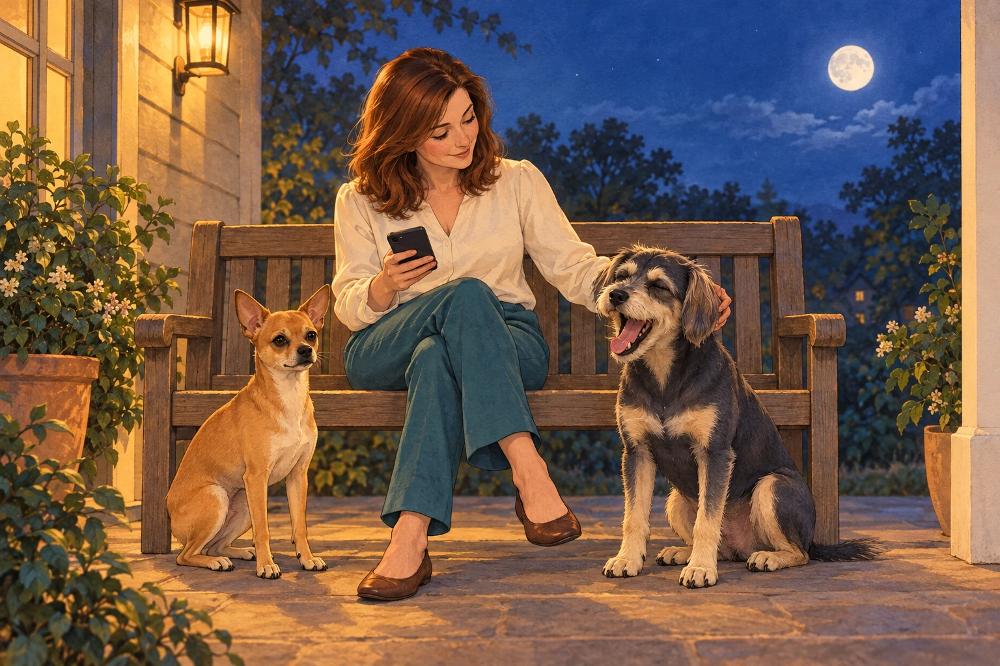
Then, another bark came from the opposite direction. A deep, throaty woof—probably from Bruno the Bulldog.
Neet squinted. “That wasn’t just a goodnight. That was a challenge.”
Buddy had been enjoying Heather’s hand moving slowly behind his ear. Neet stood up. The hand stopped.
“Or,” Buddy suggested, “he could be saying goodnight more firmly.”
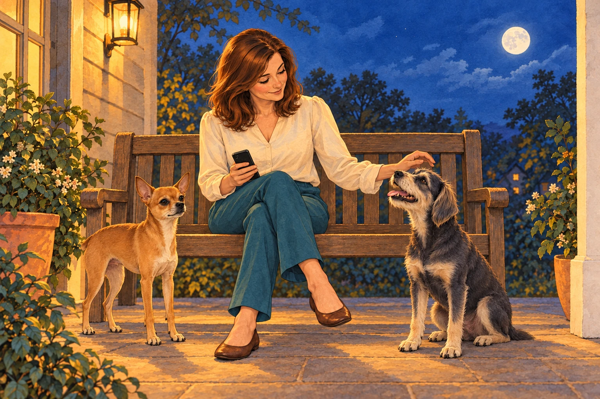
Neet hopped off the porch and sprinted toward the sound. Buddy wanted to stay, but he knew who would have to fetch Neet later. He followed. Heather looked up from her phone and put it away.
“Just find out what it is,” Buddy called after Neet. “Finding out can be very quick.”
Neet accelerated. Buddy had apparently given him a deadline.
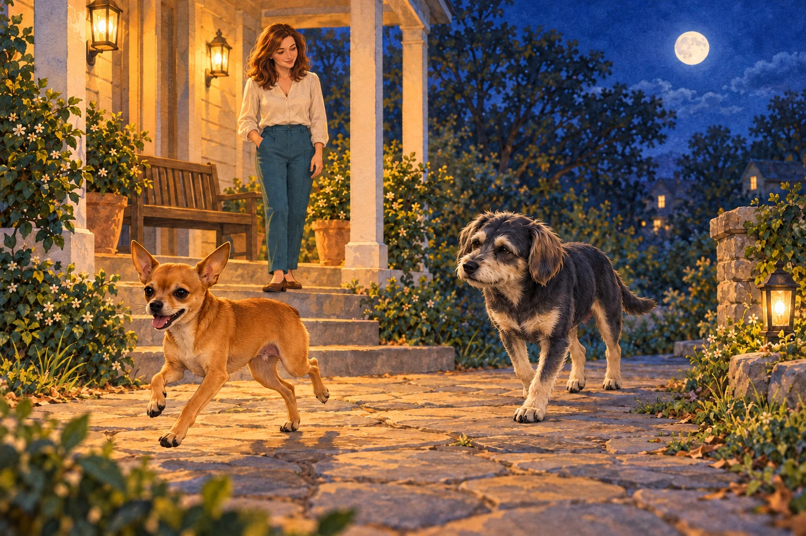
The Gathering
By the time they reached the banyan tree, a group of dogs had already assembled. Chirag sat in the middle, his tail swishing with authority.
“What’s going on?” Buddy asked, settling down next to Chikki.
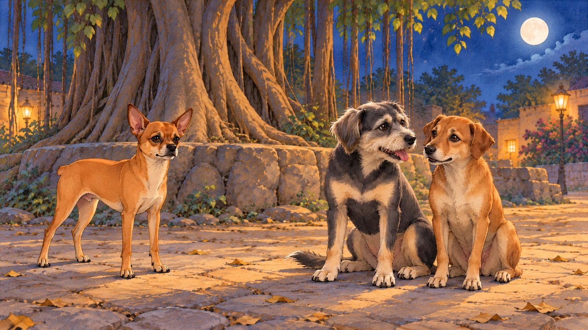
“The Great Nighttime Bark-Off,” she whispered, eyes sparkling. “It’s an unofficial contest to see who has the most powerful, ridiculous, or artistic bark.”
Neet’s tail wagged. “Finally, a competition worthy of my talent.”
Buddy looked back. Heather was coming toward the tree. His ear scratch had followed him, but it was now standing up.
Chirag stood on a raised rock and addressed the crowd. “Alright, you all know the rules. No growling, no biting, just pure, unfiltered barking. There will be three categories: Volume, Creativity, and Echo Potential. The winner earns bragging rights for the whole week.”
The crowd erupted in howls of excitement.
Buddy waited for them to finish. “Is there a Quiet category?”
“No,” said Chirag.
Buddy had been ready to win that one.
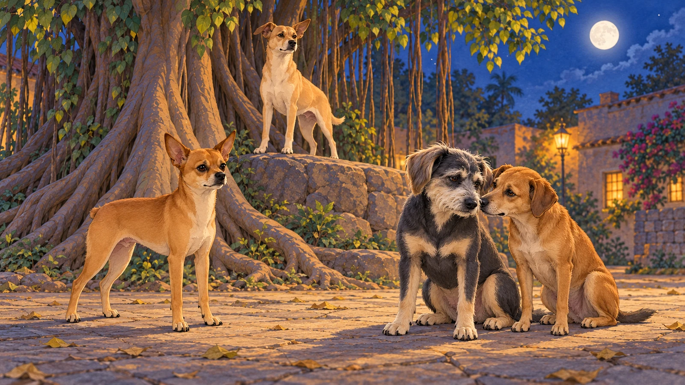
“Three rounds,” he said to Chikki. “Then home.”
“Unless somebody wants an encore.”
Buddy glanced at Neet, who was already bowing to dogs who had not applauded him.
“Then we must be very careful with the applause.”
Heather reached the tree and stopped beside Buddy. He leaned against her ankle. She stroked his head, then smiled at Neet taking possession of the open space.
“Oh, you’ve found your people.”
Buddy looked up at her. He had been trying to bring his people back.
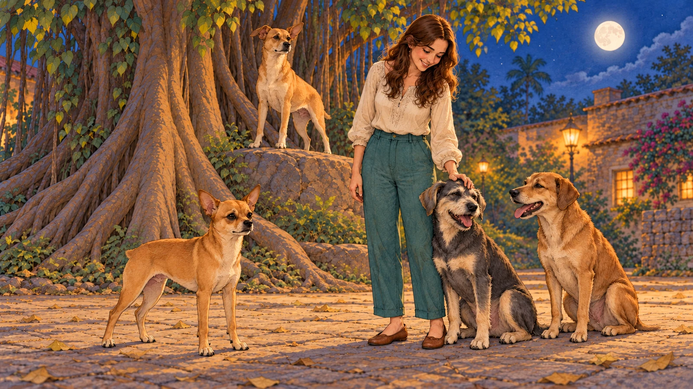
Round One: Volume
Bruno the Bulldog was first. He stepped forward, took a deep breath, and let out a thunderous “WOOOOF!”
The sheer force of it rattled nearby leaves and startled a pigeon off a wire. The audience gasped in appreciation.
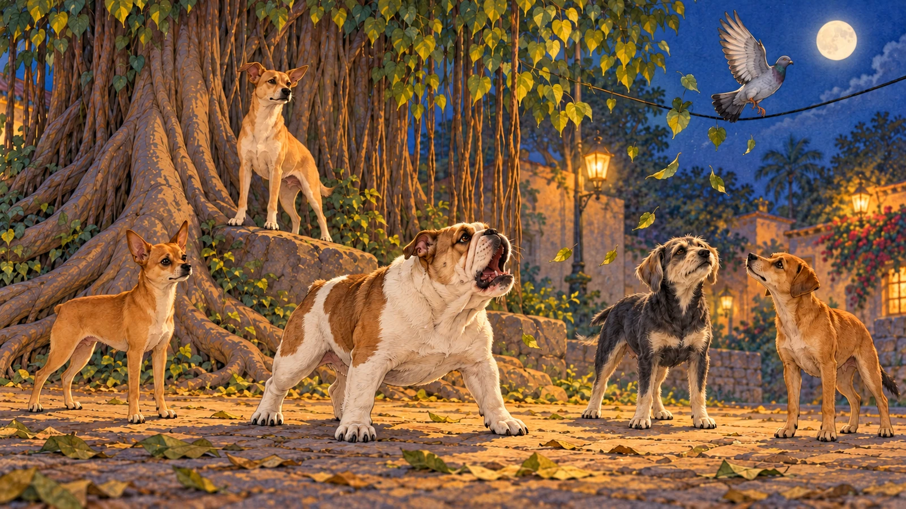
Neet narrowed his eyes. “Alright, big guy. Let me show you how it’s done.”
He strutted forward, squared his tiny body, and—
“YAPYAPYAPYAPYAPYAPYAPYAPYAPYAPYAP!”
The sound was so fast and high-pitched, it sounded like a malfunctioning alarm system. Dogs covered their ears. Buddy cringed. Bruno blinked in shock.
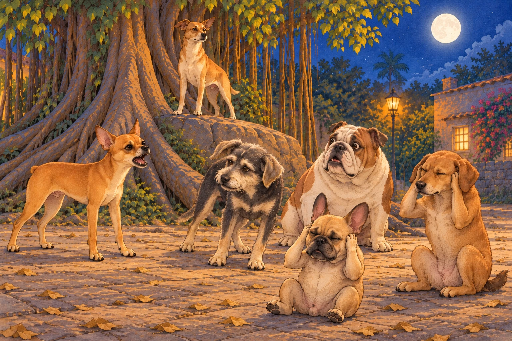
Chirag coughed. “Impressive. A little… excessive, but impressive.”
Buddy moved behind the banyan trunk. It helped until Neet turned to check whether he was listening.
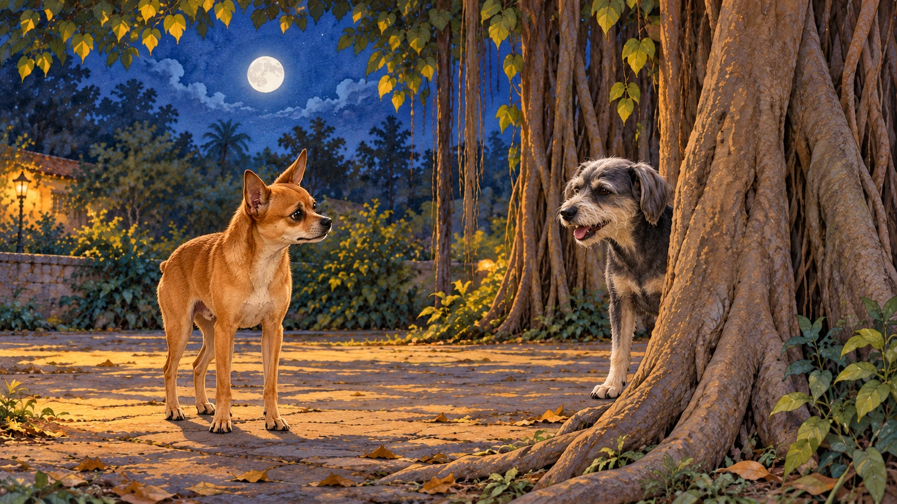
“Did you get all of that?”
“Yes,” Buddy said quickly. “Everybody got all of that.”
Neet looked doubtful. Buddy emerged before he could offer another demonstration.
The round ended with a vote, and Bruno took the Volume Trophy by a single bark.
Neet huffed. “Fine. Just warming up.”
He drew a breath.
Buddy moved into his path. “Bruno won. You can congratulate him.”
Neet held the breath, looked at Bruno, and let it out through his nose.
“Good volume.”
“Good quantity,” Bruno replied.
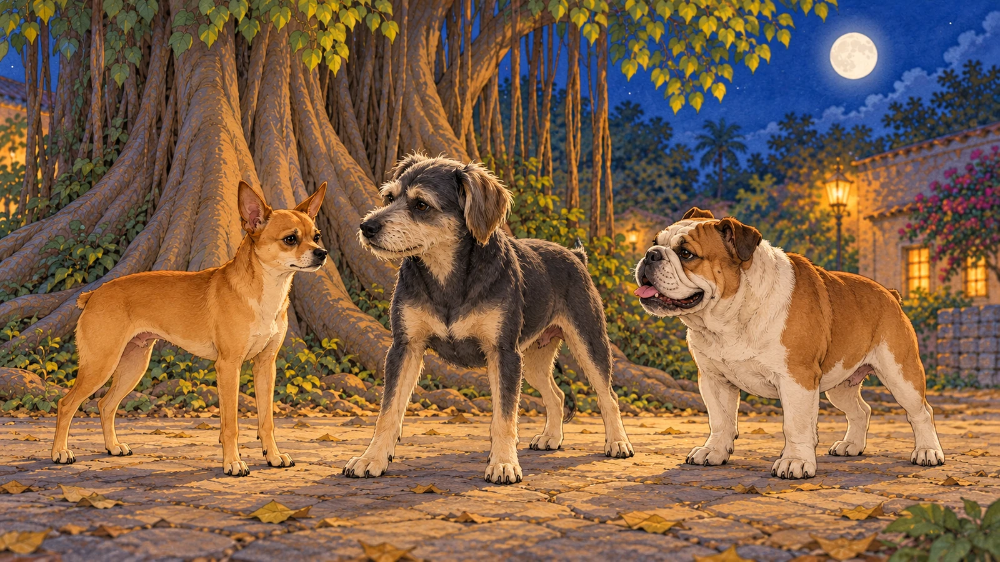
Buddy wagged. One round complete, no repeat performance. His evening was recoverable.
Chikki leaned toward him. “You sound pleased.”
“I enjoy a result.”
Round Two: Creativity
Shadow stepped forward, took a deep breath, and let out a deep, dramatic “Awoooooooooo” that sent chills down every spine. It was haunting, poetic, and full of meaning.
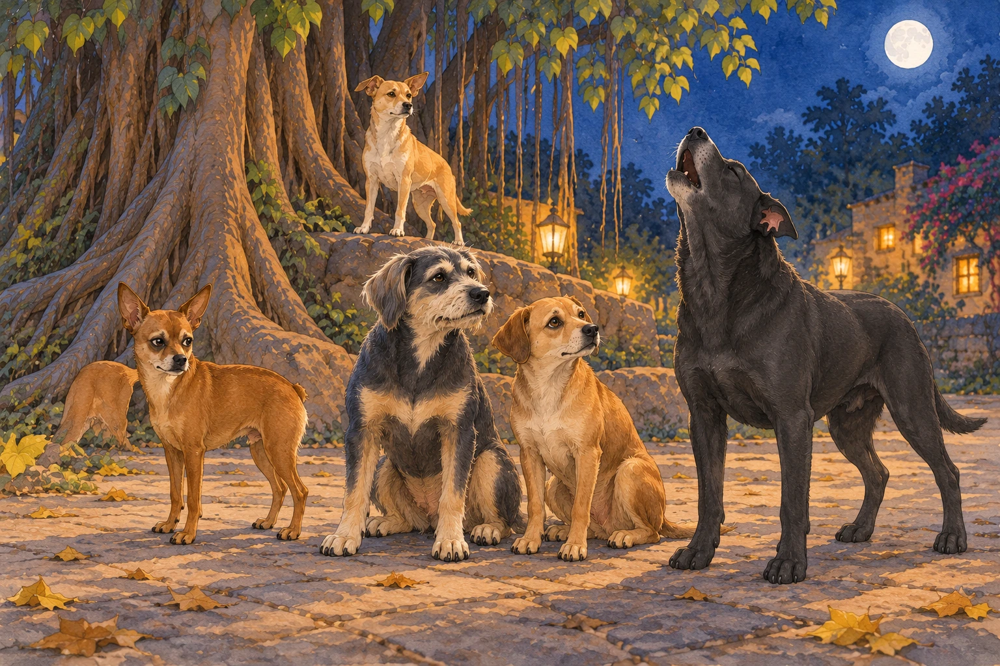
The last note faded. Nobody spoke.
Buddy studied the other dogs. Perhaps this was the end. Perhaps it was another part. He had never previously needed to know how a howl was punctuated.
Neet scoffed. “Too serious.”
Shadow inclined his head. Buddy took that as a conclusion and gave a small approving wag. One performance down. He was getting the hang of this.
Pierre the French Bulldog then delivered a three-part theatrical bark, complete with pauses and exaggerated head movements:
“Wouf.”
A pause.
Pierre looked slowly to one side. Buddy waited.
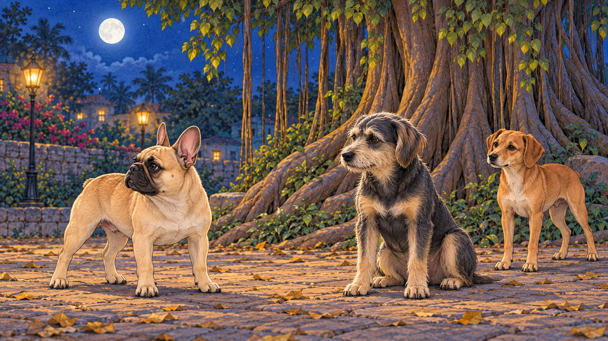
“Wouf-wouf.”
A longer pause.
Buddy mistook Pierre’s second pause for the end and gave an approving woof.
Pierre slowly turned his head toward him.
Buddy leaned forward, encouraged. Acknowledgment. Excellent. They could move on.
“WOOOOOOOOOUF!”
Buddy received the finale at close range.
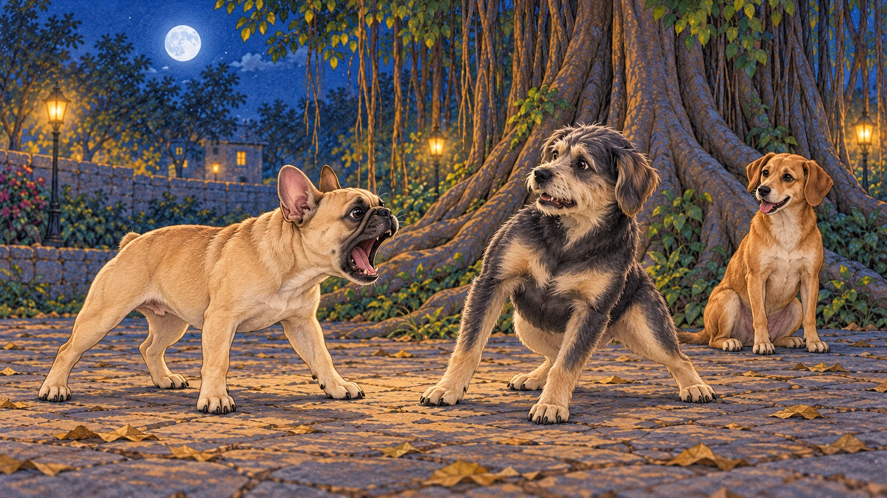
The audience clapped their paws in admiration. Buddy inspected the ground.
Chikki’s shoulders shook.
“It was a very long pause,” he said.
“It was building suspense.”
“It built me into the performance.”
Pierre gave him a courteous nod. Buddy nodded back from farther away.
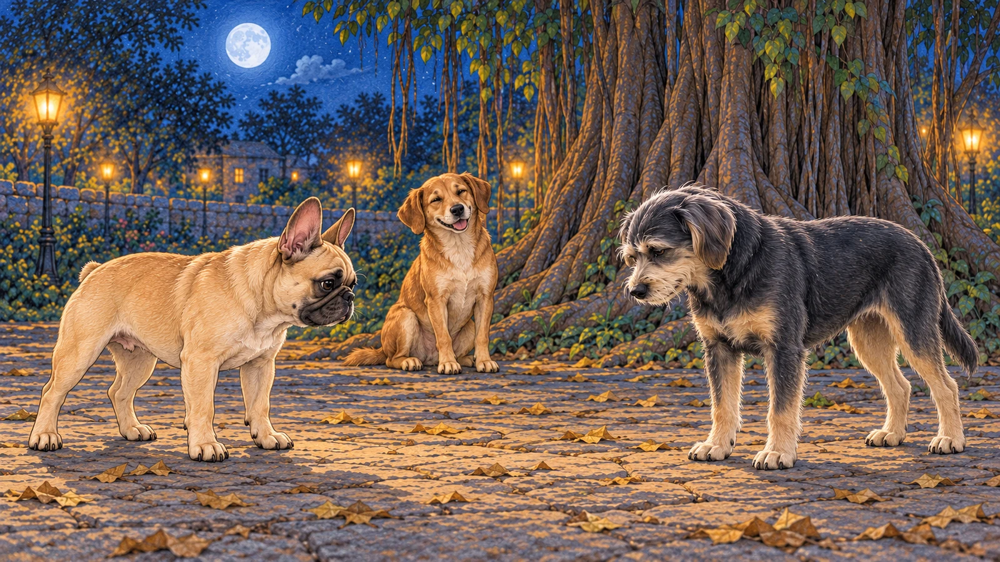
Then came Neet’s turn.
He thought for a moment, then grinned.
First, he started with a tiny “yip.”
Then, a medium “arf.”
Buddy kept his mouth shut. Whatever happened next, he would let it finish.
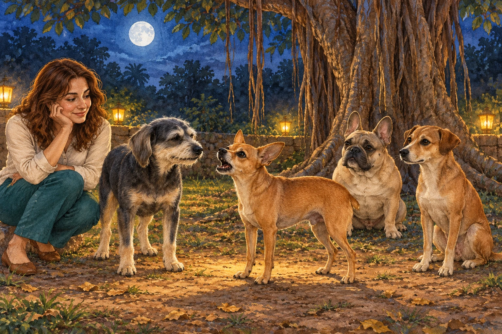
And then, out of nowhere, Neet jumped in the air and unleashed “RAWWWRWOOFROOOWF!”
Dogs gasped. Chirag clutched his heart.
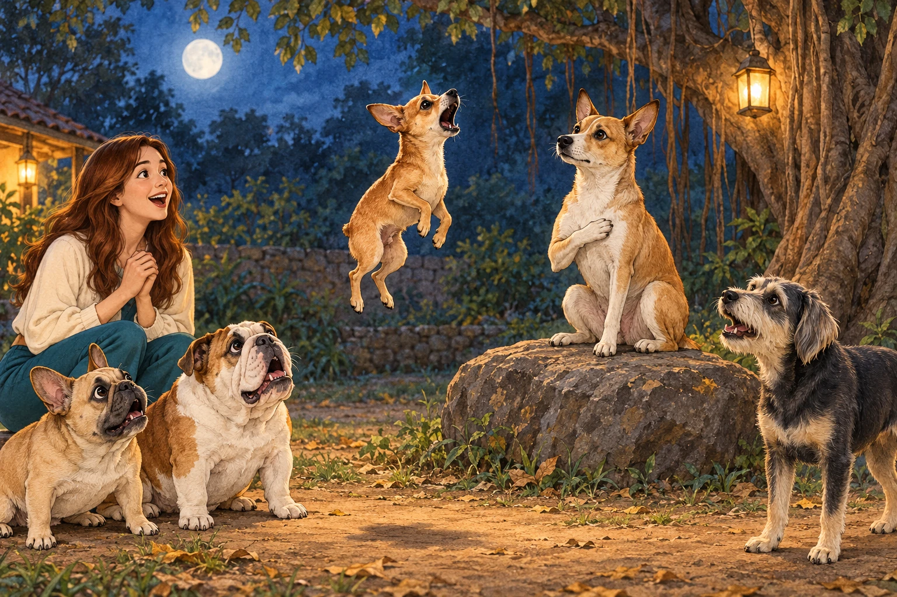
Neet landed gracefully. “I call it: The Symphony of Chaos.”
Buddy glanced at Pierre. Pierre appeared satisfied that the performance had ended. Buddy permitted himself a wag.
The vote was unanimous. Neet won Creativity.
Neet bowed dramatically. “As expected.”
Chikki cheered. Bruno joined in. Neet raised his head.
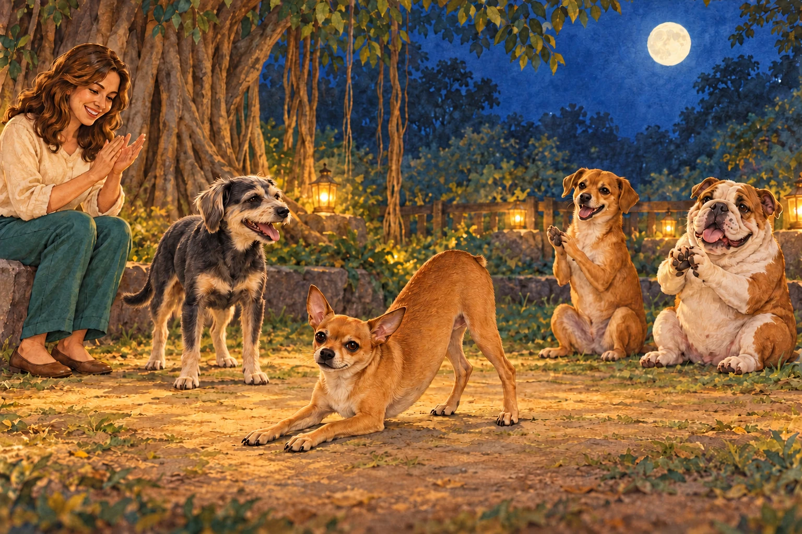
“I can also do it backwards.”
Buddy stepped beside him. “Save it for your week.”
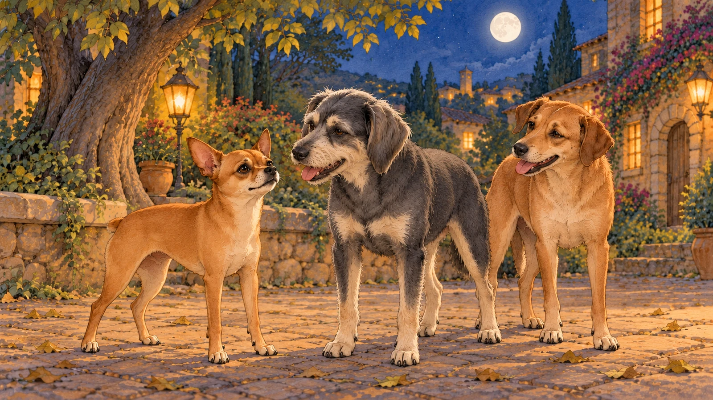
Neet considered the possibilities. Seven days was suddenly a very useful amount of time.
Heather laughed softly. Buddy returned to her ankle. She scratched behind his ear, and he leaned into the hand for three excellent seconds.
Then Chirag announced the move to the final round.
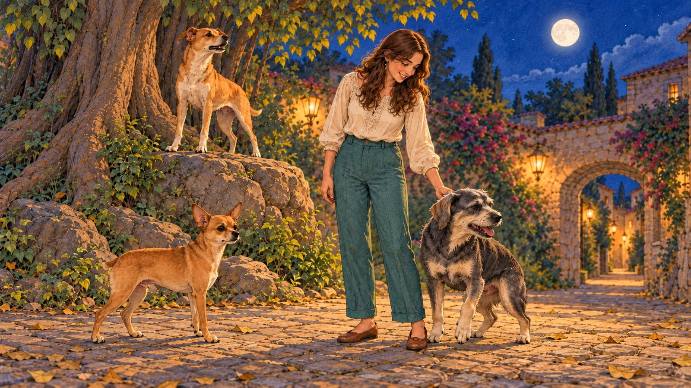
Buddy got up reluctantly. Apparently his ear scratch had an intermission.
Round Three: Echo Potential
For the final round, they needed an open spot where their barks could travel. The gang moved to an alleyway between two buildings, where echoes bounced perfectly. Heather walked along behind them.
Neet trotted into the middle and looked up at the walls.
“An audience on both sides.”
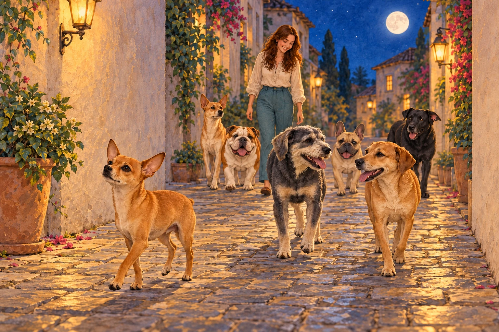
Buddy stopped beside Chikki. “The walls won’t ask for an encore.”
He was beginning to like this round.
Bruno went first. His deep, resonating “WOOOOOOF” rebounded three times before fading.
Neet opened his mouth as the third return died away.
Buddy turned toward him at once. “Wait.”
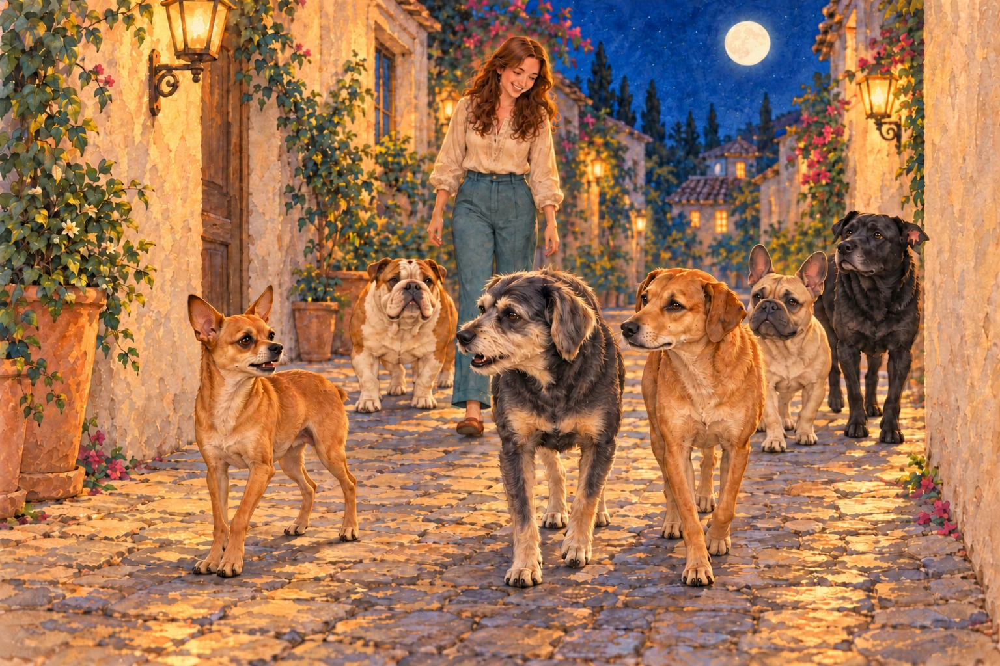
Neet shut it. The crowd fell quiet for another moment. There was no fourth echo.
“Three,” said Chirag.
Buddy relaxed. If everybody listened, a bark could actually end.
Shadow howled again, and it bounced four times, sending shivers through the crowd.
Chikki began to cheer after the third. Buddy touched her shoulder with his nose. She looked at him just as the fourth sound came back.
“Oh!” she whispered.
They waited together until it faded.
“Four,” Chirag announced.
Chikki gave Buddy a pleased nudge. “Good catch.”
Buddy sat a little straighter. He had helped finish a round properly. He had done it without barking. This could have been his category after all.
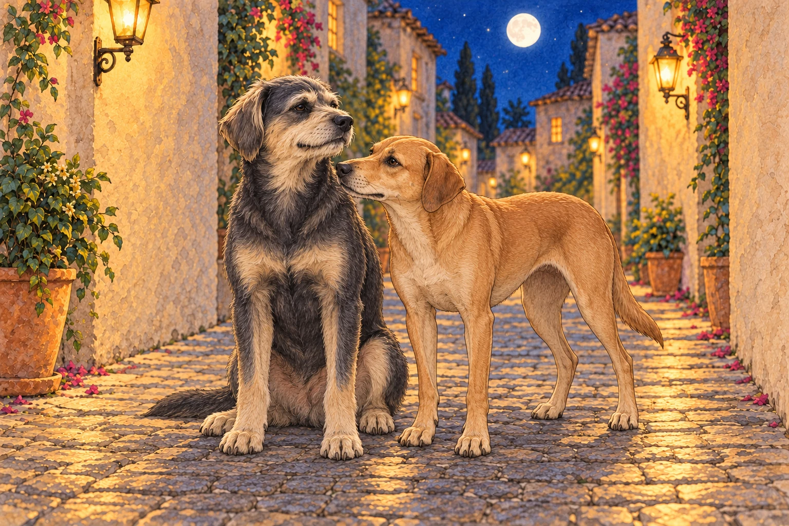
Then Neet stepped up.
He smirked, took a deep breath, and squeaked out the tiniest, sharpest bark ever.
“Yip!”
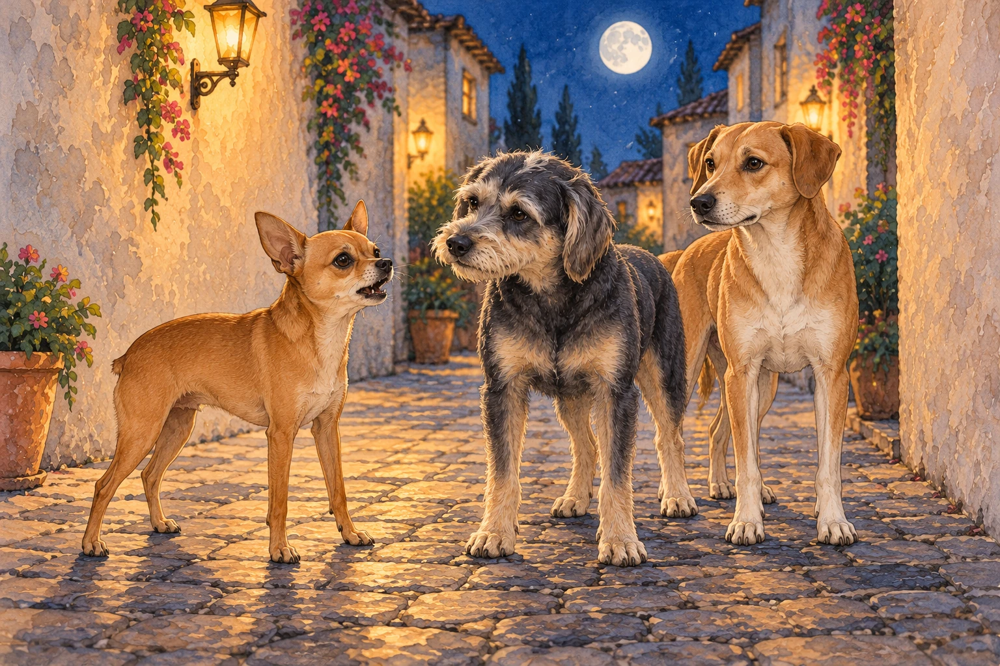
It was so sharp, so piercing, that it bounced six times, reverberating like a dog whistle across the alley.
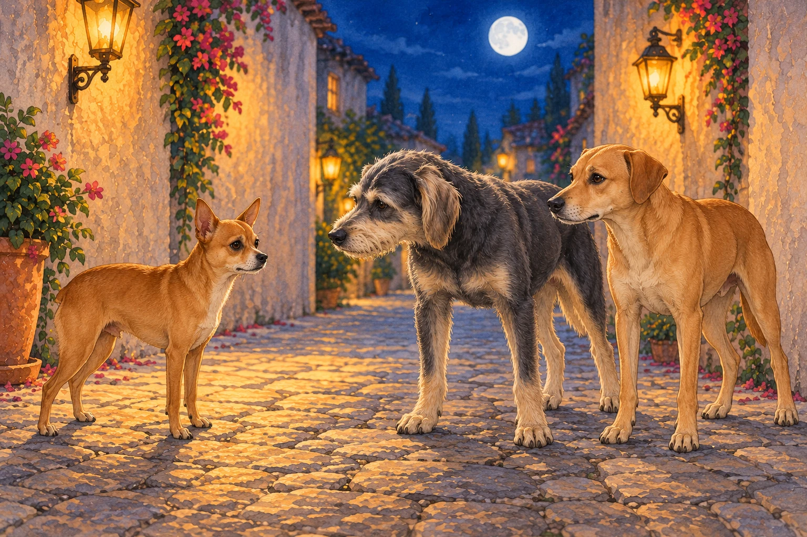
Buddy had promised himself he would not get involved. By the fourth echo, he was leaning forward. By the fifth, his mouth was open.
“Six!” he announced, louder than the original yip.
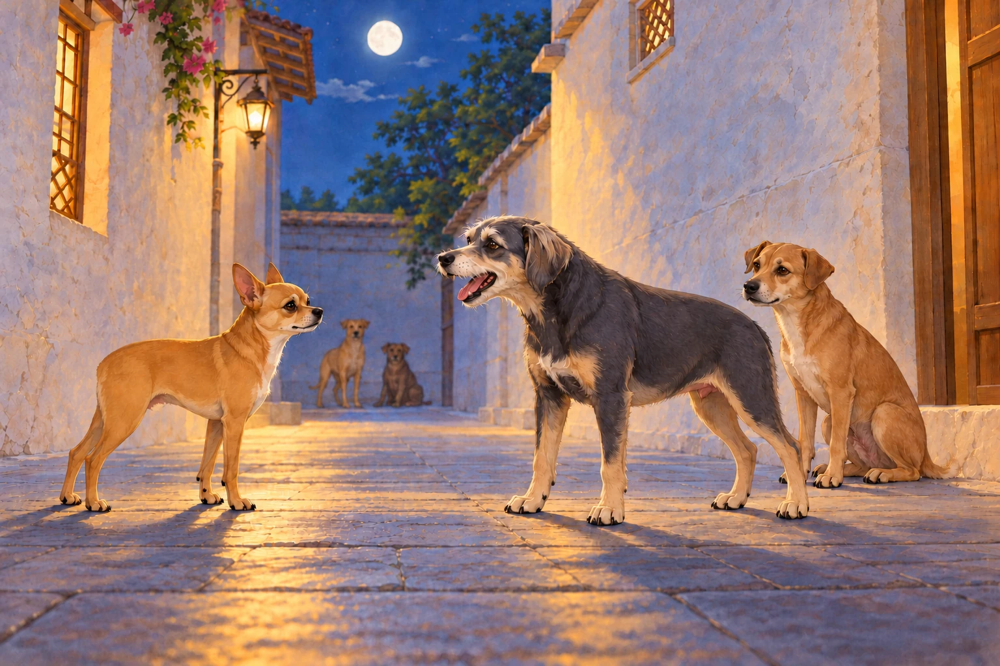
His own voice came back at him.
Buddy closed his mouth. That one did not count.
Neet looked delighted. “Even the walls agree with you.”
For a moment, there was silence.
Then, the audience erupted into cheers.
Neet had won Echo Potential.
Chikki cheered too, this time after all six returns. Buddy wagged despite himself. He had wanted the contest over; he had not expected to care how it ended.
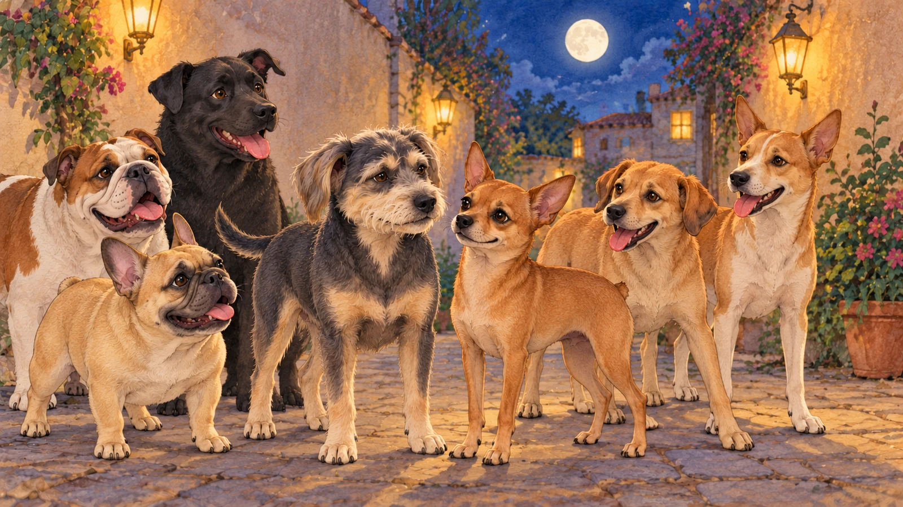
The Final Verdict
Chirag tallied the results. “Bruno takes Volume. Neet takes Creativity and Echo Potential. By the power vested in me as the Judge of Barks, the winner of this year’s Great Nighttime Bark-Off is… Neet!”
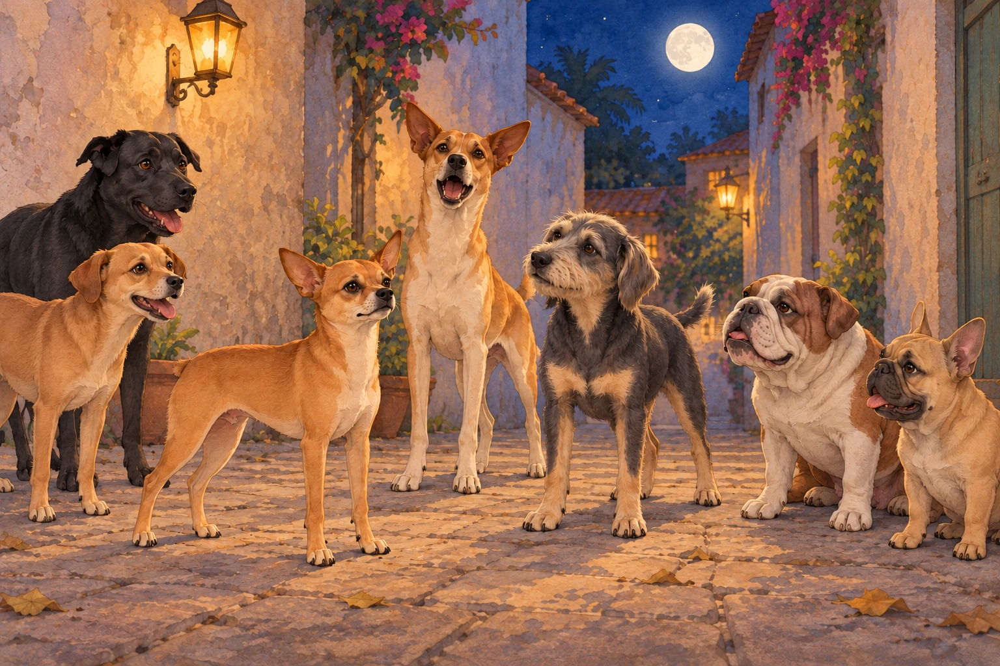
Neet puffed up. “A whole week of bragging rights.” He seemed to be calculating how much bragging would fit.
Buddy had counted all six echoes. He gave Neet one approving wag, then turned toward the porch. “That’s enough winning for tonight.”
Chikki laughed. “You have to admit, he earned it.”
“He did,” Buddy said. “Now I’d like to take the winner home.”
Bruno gave Neet a respectful nod. “You’re small, but you got lungs, kid.”
Neet turned to deliver his reply. Buddy watched his chest expand.
Heather, who had followed them from the porch and watched the contest, stepped forward. “Okay, Neet, Buddy—time to go home before someone calls animal control.”
She rested her hand briefly on Neet’s head. He looked up at her instead of giving Bruno another sample.
Buddy set off. A verdict, a compliment, a departure. Everything was proceeding beautifully.
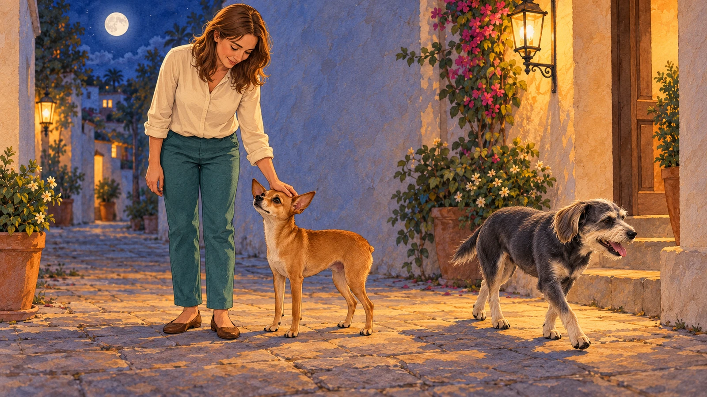
As they left, Neet howled dramatically at the moon one last time. His voice echoed across the neighborhood, carrying his victory into the night.
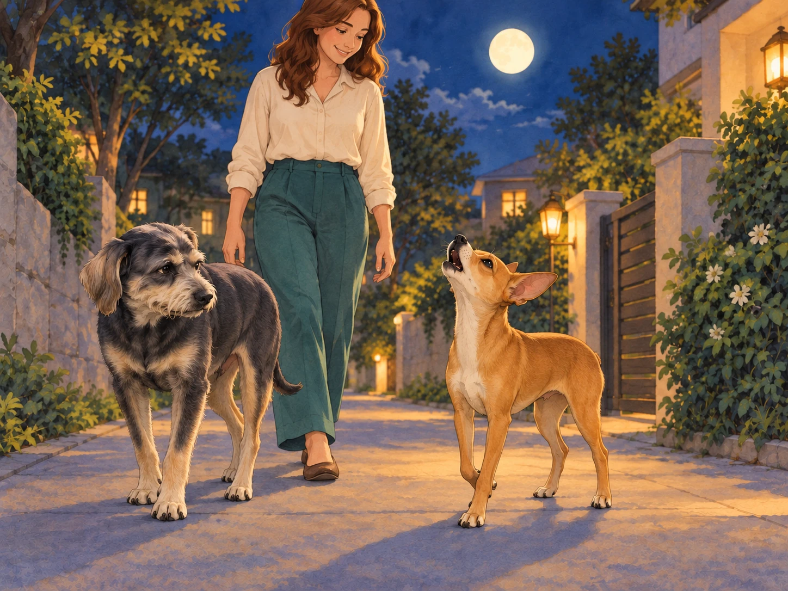
Somewhere, a human groaned and shouted, “WHOSE DOG IS THAT?!”
Buddy sighed. “I’m pretending I don’t know him.”
Neet glanced toward the voice. “Is that a new contestant?”
“No,” Buddy said. He moved closer to Heather.
Heather just laughed. “Come on, ‘Champion of Barks.’ Let’s get you some celebratory treats.”
Neet grinned. “Now that’s music to my ears.”
This time, when Buddy started toward the porch, Neet came with him.
Heather brought out a treat for each dog and sat down again. Neet received his with the solemn care of somebody accepting a major award. Buddy ate his before anyone could request a speech.
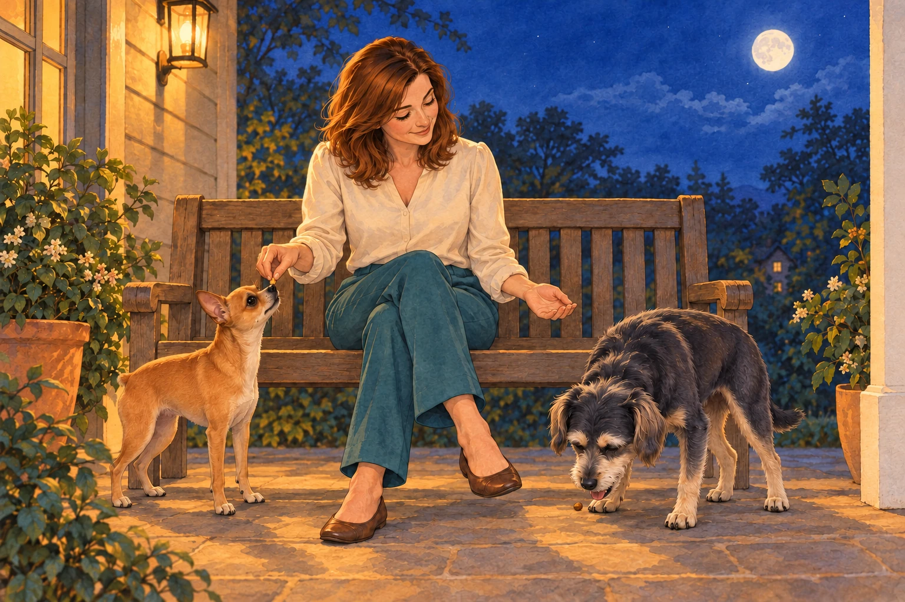
Then Heather’s hand returned behind Buddy’s ear. Neet settled beside them, still looking extremely pleased with himself. Buddy could put up with that. It was a remarkably quiet expression.
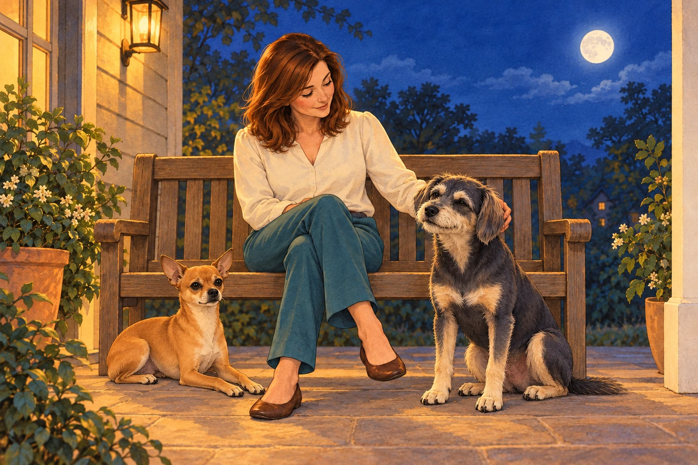
Buddy had finally found a part of the evening that required no commentary.